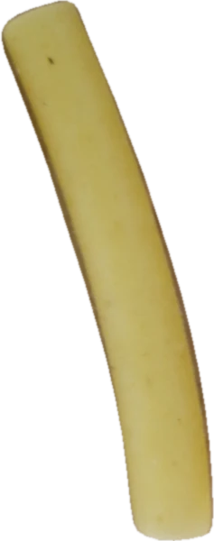
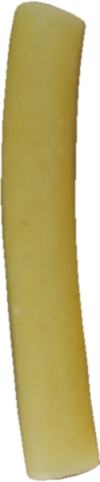

<!doctype html>
<html lang="en">
<head>
  <meta charset="utf-8">
  <meta name="viewport" content="width=device-width, initial-scale=1">
  <meta name="color-scheme" content="dark">
  <title>trashy design | trashiseeintrashydays</title>
  <style>
    * { box-sizing: border-box; }
    html, body { margin: 0; height: 100%; background: #000; }
    body { display: grid; grid-template-rows: minmax(0, 1fr) auto; color: #eee; font: 14px/1.4 system-ui, sans-serif; }
    .board { position: relative; overflow: hidden; touch-action: none; }
    .board button { position: absolute; padding: 0; border: 0; background: transparent; color: inherit; touch-action: none; }
    .piece { left: 0; top: 0; cursor: grab; user-select: none; }
    .piece:active { cursor: grabbing; }
    .piece img { display: block; width: 100%; height: 100%; pointer-events: none; }
    .piece[aria-pressed="true"] img { filter: drop-shadow(0 0 4px #ffe7a878); }
    button:focus-visible { outline: 1px solid #f8dc85; outline-offset: 3px; }
    .board .rotate {
      transform: translateX(-50%); z-index: 2;
      width: 44px; height: 44px; border-radius: 50%;
      display: grid; place-items: center; cursor: grab;
    }
    .rotate:hover, .rotate:focus-visible { background: #ffffff20; }
    .rotate:active { cursor: grabbing; }
    .rotate svg { width: 25px; height: 25px; pointer-events: none; }
    [hidden] { display: none !important; }
    .join { position: absolute; z-index: 3; pointer-events: none; width: 12px; height: 12px; border: 1px solid #ffebaa; border-radius: 50%; transform: translate(-50%, -50%); }
    .tools { text-align: center; padding: .35rem 1rem max(.85rem, env(safe-area-inset-bottom)); }
    .tools p { margin: 0 0 .45rem; color: #bbb; }
    .picker { display: flex; justify-content: center; gap: .5rem; }
    .picker button {
      display: grid; place-items: center; width: 56px; height: 58px; padding: .3rem;
      border: 1px solid #48433b; border-radius: .45rem; color: inherit; background: #12110f; cursor: pointer;
    }
    .picker button:hover { border-color: #f8dc85; }
    .picker .bin {
      width: min(150px, 42vw); height: 65px;
      display: grid; grid-template-columns: 36px 1fr; gap: .2rem;
      border: 1px solid #665a40; border-top: 3px solid #b59656;
      border-radius: .2rem .2rem .65rem .65rem; padding: .3rem .65rem;
      text-align: left; background: #17140e;
    }
    .bin-copy { display: grid; gap: .15rem; }
    .bin-count { font-size: .75rem; color: #ccc; }
    .picker .bin[data-target="match"] { background: #39301a; border-color: #f8dc85; }
    .picker .bin[data-target="wrong"] { background: #381c17; border-color: #ec937e; }
    .picker img { display: block; height: 42px; width: auto; pointer-events: none; }
  </style>
</head>
<body>
  <main class="board" aria-label="Pasta architecture canvas">
    <div class="join" hidden aria-hidden="true"></div>
    <button class="rotate" type="button" hidden aria-label="Rotate selected pasta" title="Drag to rotate, or tap to turn 15 degrees">
      <svg viewBox="0 0 24 24" fill="none" stroke="currentColor" stroke-width="1.5" stroke-linecap="round" stroke-linejoin="round" aria-hidden="true">
        <path d="M20 10a8 8 0 1 0-2.5 8M20 5v5h-5"/>
      </svg>
    </button>
  </main>
  <footer class="tools">
    <p class="sort-hint" role="status">Drag pasta into its matching bin, or build on the canvas. Click a bin to take a piece back.</p>
    <div class="picker" aria-label="Pasta sorting bins">
      <button class="bin" type="button" data-bin="curved" aria-label="Curved pasta bin, 0 pieces" title="Take a curved piece from this bin">
        
        <span class="bin-copy">Curved bin <span class="bin-count">0 pieces</span></span>
      </button>
      <button class="bin" type="button" data-bin="straight" aria-label="Straight pasta bin, 0 pieces" title="Take a straight piece from this bin">
        
        <span class="bin-copy">Straight bin <span class="bin-count">0 pieces</span></span>
      </button>
    </div>
  </footer>
  <script src="pasta-design.js?v=sorting-1" defer></script>
</body>
</html>
